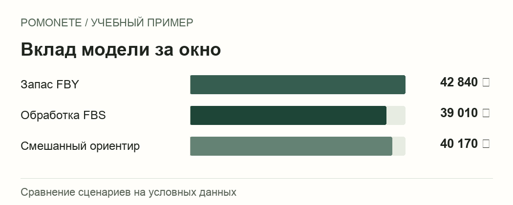

FBY и FBS для одной позиции. Как селлеру сравнить деньги и доступность
Аналитика Яндекс Маркета по двухмодельному ассортименту с собственной закупкой и расходами каждой модели.
Магазин кофейных аксессуаров хочет посмотреть, где предсказуемее отгружать один набор на Яндекс Маркете. На двух моделях различаются работы, доступность и фактическое число продаж. Для сравнения нужны приведённые расходы и объём завершённых заказов на одинаковом горизонте.
Что сверить между моделями
Опишите, какие операции выполнены магазином и какие включены в услугу. Возьмите сопоставимый товар, цены и период. Отдельно поставьте подготовку поставки, хранение и труд сотрудников по сборке. При смешанной схеме используйте исходные объёмы, затем считайте взвешенные ставки.
Чтобы пересобрать расчёт «Вклад модели за окно» для своего магазина, перенесите в него исходные числа. В формуле A обозначает «доход с доставки, ₽», B обозначает «прямые затраты с доставки, ₽», C обозначает «завершённые доставки», D обозначает «отдельные затраты модели, ₽». Удельную разницу умножают на количество. Последняя величина относится ко всему сценарию и учитывается один раз. Запишите рядом период и охват каждого среза. Если для одной строки известна только оценка, оставьте пояснение непосредственно рядом с ней: по итоговой цифре источник уже не восстановить.
Вклад модели за окно = (A − B) × C − D
| Условие | Доход с доставки, ₽ | Прямые затраты с доставки, ₽ | Завершённые доставки | Отдельные затраты модели, ₽ | Вклад модели за окно |
|---|---|---|---|---|---|
| Запас FBY | 2 020 | 1 530 | 116 | 14 000 | 42 840 ₽ |
| Обработка FBS | 2 020 | 1 490 | 97 | 12 400 | 39 010 ₽ |
| Смешанный ориентир | 2 020 | 1 510 | 107 | 14 400 | 40 170 ₽ |

В сценарии «Запас FBY» в формулу подставляем доход с доставки, ₽ = 2 020, прямые затраты с доставки, ₽ = 1 530, завершённые доставки = 116, отдельные затраты модели, ₽ = 14 000. Получается 42 840 ₽. Поставка подготовлена заранее. В строке присутствуют хранение и работы по партии.
В сценарии «Обработка FBS» в формулу подставляем доход с доставки, ₽ = 2 020, прямые затраты с доставки, ₽ = 1 490, завершённые доставки = 97, отдельные затраты модели, ₽ = 12 400. Получается 39 010 ₽. Свой склад обслуживает поток заказов и учитывает труд в строках затрат.
В сценарии «Смешанный ориентир» в формулу подставляем доход с доставки, ₽ = 2 020, прямые затраты с доставки, ₽ = 1 510, завершённые доставки = 107, отдельные затраты модели, ₽ = 14 400. Получается 40 170 ₽. Средний вариант сравнения собран для корзины с частичной передачей запасов.
Если «Запас FBY» взять за исходную точку, «Обработка FBS» меняет показатель «вклад модели за окно» на -3 830 ₽, а «Смешанный ориентир» на -2 670 ₽. Между двумя последними строками разница составляет 1 160 ₽ при вычитании второй из третьей. Смотрите, какой именно вход изменился между строками. Если менялись объём и условия одновременно, итог сравнения относится ко всему сочетанию.
В пересчёте на исходное значение разница второй строки составляет -8,94%. Здесь в знаменателе модуль первого результата, 42 840 ₽. Для показателя в процентах рядом сохраните и абсолютную разницу в процентных пунктах. Для малого исходного значения процентный скачок может оказаться крупным даже при скромном практическом эффекте. В рабочем отчёте оставьте оба исходных значения, чтобы при расширении выборки можно было пересчитать изменение.
Как не принять число заказов за качество модели
Разница может идти от наличия, сроков, регионов и показа предложений. Для решения полезно проверить причины на нескольких товарах. Вынесите из вывода недели, в которых одному сценарию мешал недоступный вариант, если оценка относится к работе при нормальном запасе.
Соберите небольшую исходную выборку для «Обработка FBS», прежде чем переносить правило на весь магазин. Нужны журнал склада и временные отметки заказов. Среди записей найдите одну обычную и одну с изменённым значением «доход с доставки, ₽». Убедитесь, что после пересчёта на сопоставимое окно обе строки дают те же результаты, которые видит исполнитель. Для ручных поправок оставьте короткое основание.
Для сравнения выведите короткий журнал с временем поступления работы, началом обработки и моментом передачи. Длительность операции измеряют на нескольких сменах, чтобы короткая спокойная неделя не стала единственной нормой. Товары разных размеров и сложность сборки записывают отдельными группами. На узком участке неравномерность важна так же, как общая загрузка: два одинаковых дневных итога могут оставить разный хвост необработанных заказов.
Что сильнее всего меняет результат
Здесь проверим устойчивость числа 39 010 ₽, полученного для «Обработка FBS». Настраиваемые входы: «доход с доставки, ₽», «прямые затраты с доставки, ₽», «завершённые доставки», «отдельные затраты модели, ₽». Меняем по одному параметру с шагом около 10% от его значения. Для небольших исходных чисел разница округляется до доступной целой единицы. Сдвиги ниже относятся к исходному сценарию, поэтому читатель может сопоставить их в одних единицах.
- «Доход с доставки, ₽» меняется с 2 020 на 2 222. При прежних остальных входах получается 58 604 ₽, сдвиг составляет 19 594 ₽.
- «Прямые затраты с доставки, ₽» меняется с 1 490 на 1 639. При прежних остальных входах получается 24 557 ₽, сдвиг составляет -14 453 ₽.
- «Завершённые доставки» меняется с 97 на 107. При прежних остальных входах получается 44 310 ₽, сдвиг составляет 5 300 ₽.
- «Отдельные затраты модели, ₽» меняется с 12 400 на 13 640. При прежних остальных входах получается 37 770 ₽, сдвиг составляет -1 240 ₽.
Наибольшее отклонение в примере связано с параметром «доход с доставки, ₽» и составляет 19 594 ₽. Сохраните в расчёте, почему выбран именно этот сдвиг. После следующей выгрузки вместо учебных шагов попробуйте подставить разницу между наблюдавшимися периодами. Так проверите, насколько устойчива цифра при фактических колебаниях вашего магазина.
Распишите ситуацию со сборкой в пиковый день. Если время своей команды дорого из-за других заказов, цена дополнительного часа выше обычного. Учтите это при сравнении той же модели в обычной и пиковой неделях.
Что отдать на пилот
Выберите сопоставимые предложения с фиксированной комплектацией и сохраните участки работы и ожидаемые затраты. После закрытия спроса сверяйте вклад и долю передач к сроку. В решении укажите, какая часть операции переносится и когда эффект будет снова проверен.
Полезно раз в несколько смен собрать пакет отклонений и приложить отметки о причинах. У одного опоздания бывает несколько объяснений, и назначать его первому видимому участку рискованно. Если временный ресурс перемещали между зонами, включите в расчёт, где исчезли эти часы. После пилота проверьте верхний хвост длительности и число заказов, которые перешли за срок.
Заведите карточку наблюдения с тремя числами: исходный ориентир, факт после вмешательства и размер выборки. Для «вклад модели за окно» оставьте единицу из таблицы и дату подстановки. В аналитике продавца Яндекс Маркета показатель должен отвечать на тот же вопрос при повторном сборе. Если на следующем цикле изменятся исходники, сохраняйте расхождение вплоть до строки, которую сможет пересчитать коллега.